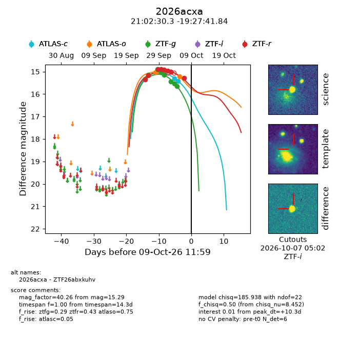
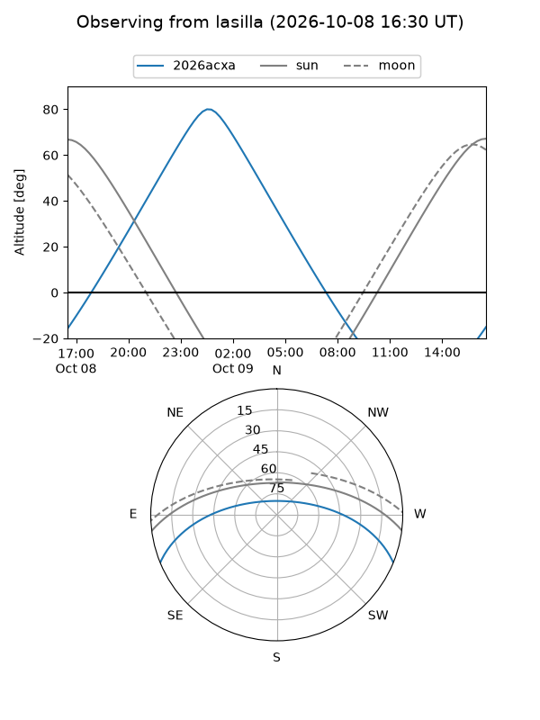
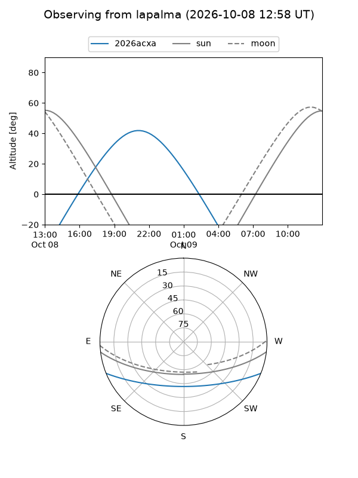
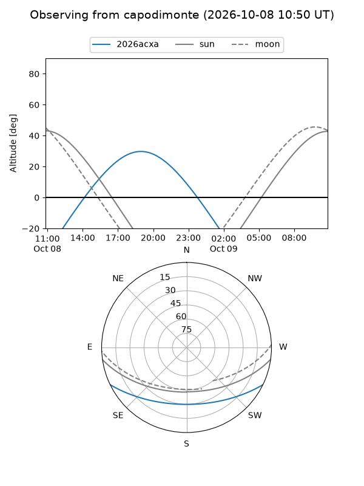
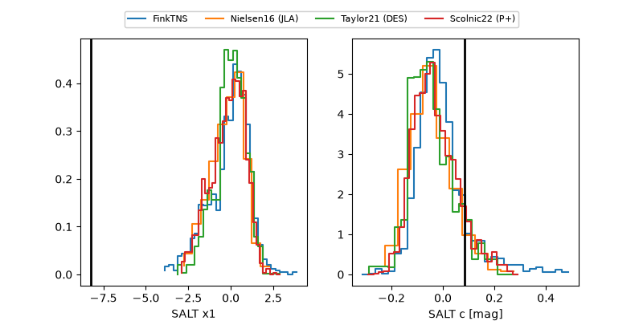

2026acxa
Target 2026acxa at 2026-10-09 12:01
Aliases and brokers:
FINK-ZTF: ztf.fink-portal.org/ZTF26abxkuhv
Lasair-ZTF: lasair-ztf.lsst.ac.uk/objects/ZTF26abxkuhv
ALeRCE-ZTF: alerce.online/object/ZTF26abxkuhv
YSE-PZ: ziggy.ucolick.org/yse/transient_detail/2026acxa
TNS name: wis-tns.org/object/2026acxa
Direct TNS query: direct search
alt names
ZTF26abxkuhv (ztf,fink_ztf)
2026acxa (tns,yse)
Coordinates:
equatorial (ra, dec) = 315.6261,-19.46162
equatorial (HMS+DMS) = 21:02:30.27,-19:27:41.84
galactic (l, b) = (28.3287,-37.30660)
Flags:
peak dt: +10.3
Photometry:
last atlasc=15.41, atlaso=15.22, ztfg=15.65, ztfr=15.29
2 atlasc, 5 atlaso, 8 ztfg, 8 ztfr detections
Lightcurve

Visibility



Additional plots
